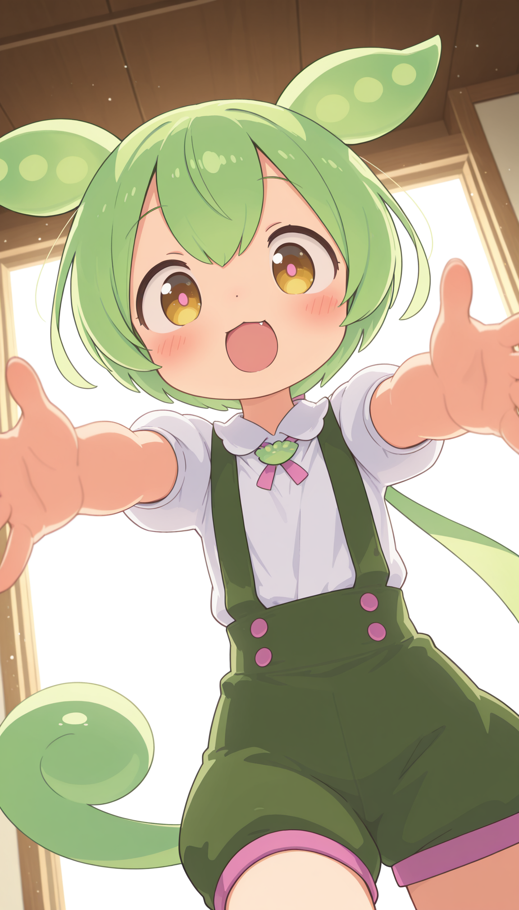
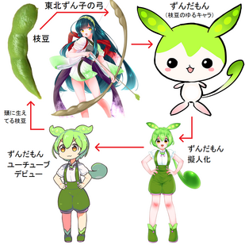
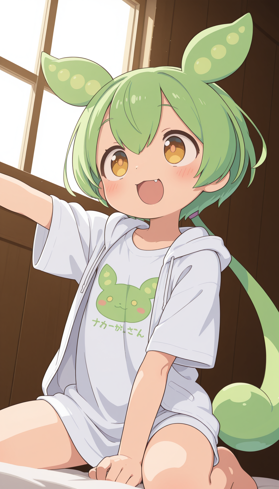
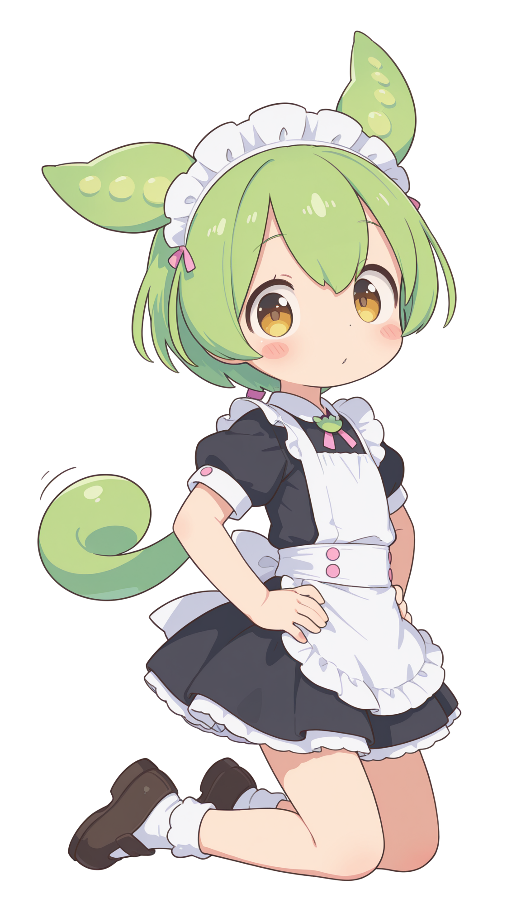
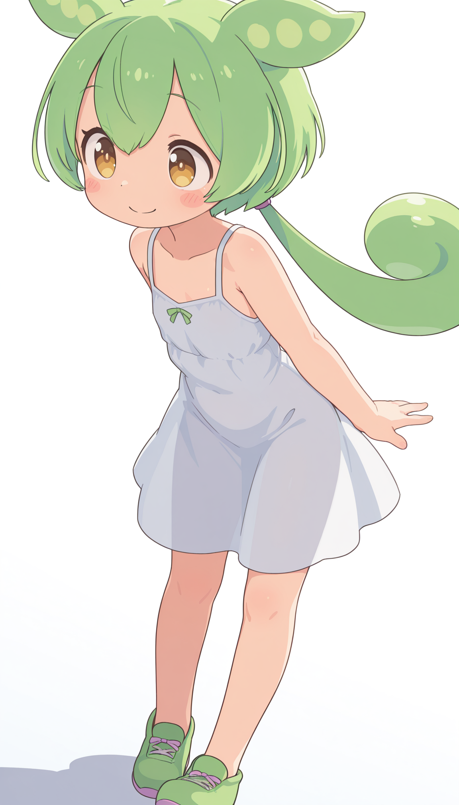

유튜브 쇼츠나 릴스를 보다보면 한 번쯤 초록색 캐릭터가 "~나노다"라고 하며 귀여운 목소리로 뭔가 이야기하는걸 본 적이 있을거임. 이녀석의 이름은 '즌다몬(ずんだもん)'이라고 하는데, 애니메이션 캐릭터도 아니고 유명 버추얼 유튜버 캐릭터도 아님. 그럼 대체 정체가 뭘까??

이 캐릭터의 기원을 찾으려면 약 16년 전 동일본대지진 시절로 거슬러올라가야 함. 당시 엄청난 피해를 입은 도호쿠 지방의 경제 복구 및 부흥을 위해 한 회사에서 다양한 지역특산물들을 캐릭터화하여 마스코트화하는 사업을 벌였는데, '즌다몬'은 주인공 캐릭터인 '도호쿠 즌코'와 함께 하는 작은 정령 캐릭터에 불과했음
('즌다몬'의 모티브가 된 도호쿠 향토음식 '즌다모찌')
당시 마스코트인 '도호쿠 즌코' 옆에 깨알같이 등장해서 말끝마다 '~나노다'를 붙이는 캐릭터에 불과했음. 그런데 이 캐릭터가 어떻게 유명세를 얻게 되었느냐

'즌다몬'을 출시한 회사에서 2021년 캐릭터의 의인화 일러스트를 공식 게재함. 그리고 음성 합성 프로그램 'VOICEVOX'에서 메인 대표 음성으로 '즌다몬'의 보이스가 탑재됨. 이 때 우리가 듣는 '즌다몬'의 목소리가 생김

억울해하는 듯 하면서도 밝고 개성적인 목소리톤과 "~나노다"말투가 합쳐져 묘한 중독성이 있는데다 'VOICEVOX' 측에서 저작권 걱정 없이 마음껏 쓸 수 있도록 풀면서 '즌다몬'의 보이스를 쓴 영상들이 엄청나게 쏟아지며 인기를 얻게 됐음

현재 일본 유튜브나 니코동에서 윳큐리처럼 해설 역으로 정말 많이 등장하며, 특유의 "~나노다" 말투로 뉴스나 역사, 지식 같은 어려운 소재를 이해하기 쉽게 설명해주는 역할을 함. 2차 창작으로도 동네북이나 불쌍한 캐릭터로 많이 등장하며 엄청난 인기를 얻고 있음. 도호쿠 지방 부흥을 위한 지역 홍보 마스코트 캐릭터로써의 역할은 완전 대성공한 셈임
개드립에서 지금 첨보는데 뭘 당연하다는듯이 이거 글쓴 개붕이가 평소에 저런거 많이봐서 나오나봄